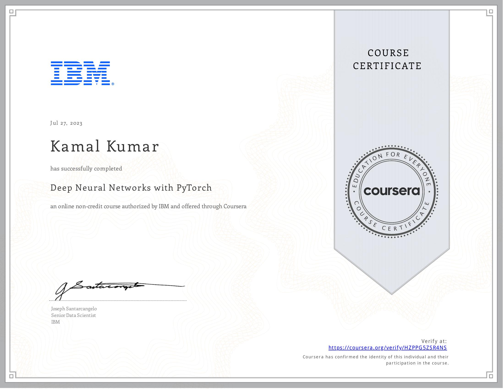

Mr. KAMAL
Contact Information
Email: kkamal@iitg.ac.in
Phone: +917052021183
Education
- I completed my Bachelor's degree in Computer Science and Engineering from Dr. APJ Abdul Kalam Technical University, Lucknow, in 2018. Following that, I pursued a Master's degree in Computer Science and Engineering from Dr. B.R. Ambedkar National Institute of Technology, Jalandhar (Punjab), graduating in 2021. Currently, I am pursuing a Ph.D. in Data Science and Artificial Intelligence at the Indian Institute of Technology Guwahati. Under the guidance of Dr. Debanga Raj Neog and Professor M.K. Bhuyan, I aim to delve deeper into the fascinating realms of data science and artificial intelligence. During my Master's program, I was fortunate to work under the supervision of Dr. Amritpal Singh. Through these educational experiences, I aspire to contribute meaningfully to the field of Data Science and AI, leveraging technology to solve complex problems and drive innovation.
Teaching Assistance
- Data Science: An Introduction (DA-106), Coursera Online Bsc Degree combined with IIT Guwahati 2024
- Introduction to Privacy and Security (DA-352), IIT Guwahati 2024
- Introduction to Artificial Intelligence (DA-221), IIT Guwahati 2024
- C Programming (DA-104), Coursera Online Bsc Degree combined with IIT Guwahati 2023
- Python Programming Lab (DA-514), IIT Guwahati 2023
- Big Data Analytics: Tools & Techniques (DA-331), IIT Guwahati 2023
- Python Programming Laboratory (DA-213), IIT Guwahati 2023
- Image Processing & Machine Learning (DA-526), IIT Guwahati 2023
- Deep Learning for Computer Vision (DA-621), IIT Guwahati 2022
- Introduction to Statistical Learning (DA-321), IIT Guwahati 2022
- Introduction to Data Science (DA-231), IIT Guwahati 2022
- C-Programming Lab, NIT Jalandhar
- Computer Network Lab, NIT Jalandhar
- Operating System Lab, NIT Jalandhar
Technical Skills
- Python
- C++
- C programming
- SQL
- HTML, CSS, PHP, Java Script
Languages
- Hindi
- English
Cirtificate Earned

- 


.png)


Others
- Represented School of DSAI in North-East Research Conclave (may 20-22, 2022)
- Delivered a talk on Face Forgery Detection at DSAI IIT Guwahati (july 2022)